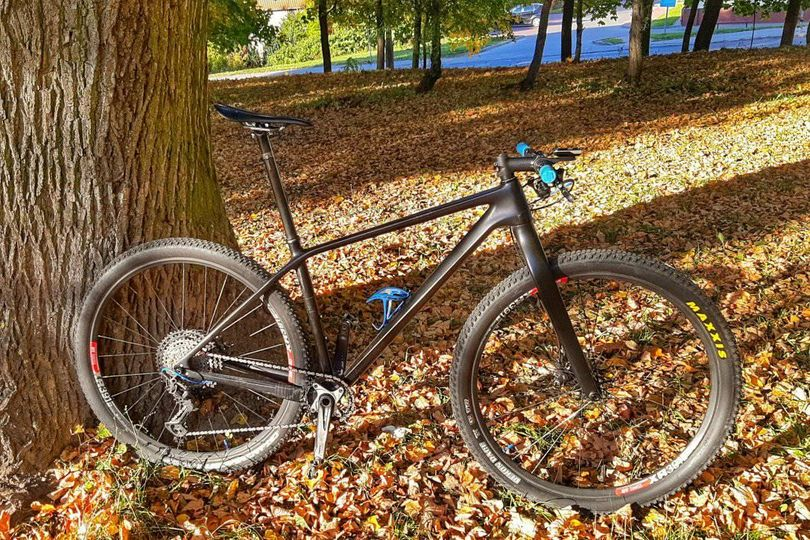

Cyklomaniak - Wojciech Kowalczyk
Moje motto
"Sukces to suma wysiłku powtarzanego z dnia na dzień..."
Trening co słychać?
Jesień w pełni 🌞, u mnie to czas na odpoczynek po intensywnym sezonie. Można powiedzieć, że aktualnie jeżdżę rekreacyjnie dla przyjemności 😀. Powróciłem teraz do biegania jako alternatywa dla roweru, w sezonie nie było na to specjalnie miejsca. Natomiast od połowy listopada ruszam do budowania formy na kolejny rok. 💪 Jak tam u was, czy zaczeliście już roztrenowanie?
